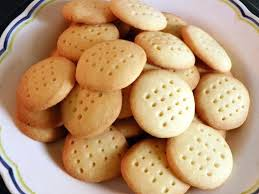

Scottish Shortbread

Description
Light and very buttery. The recipe does not make a large batch, but it's simple enough to make many batches.
Ingredients
- 1 ½ cups all-purpose flour
- ⅓ cup white sugar
- ¾ cup butter
Steps
- Preheat the oven to 350 degrees F (175 degrees C). Butter a 9-inch square baking dish.
- Blend flour, sugar, and butter until well combined; dough will be stiff. Press into the prepared dish and prick the top all over with a fork.
- Bake in the preheated oven until pale golden brown on the edges, 20 to 25 minutes. Cool completely before cutting into squares.